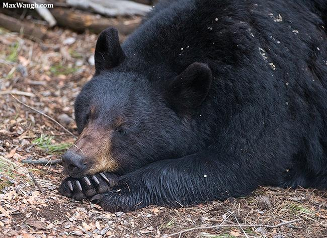
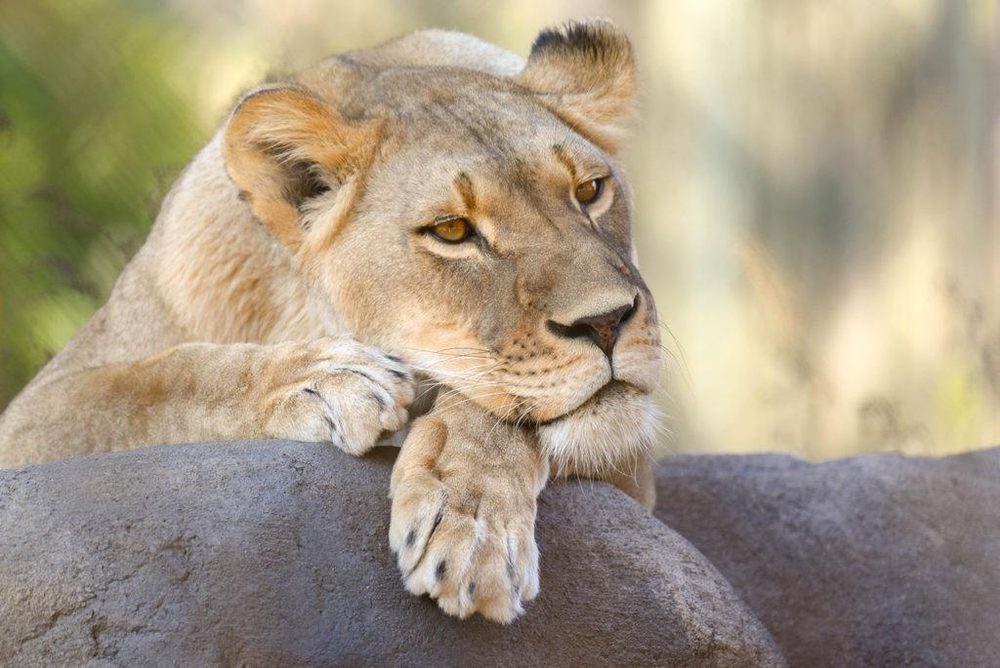
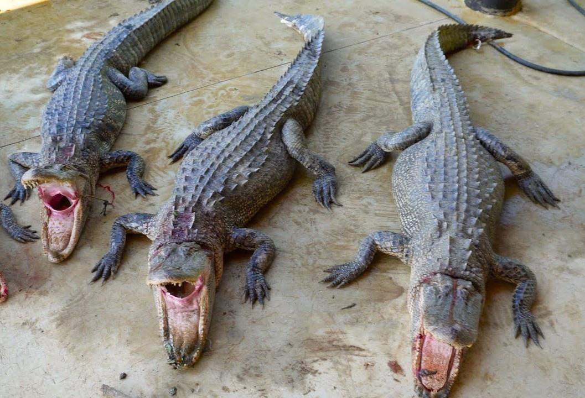
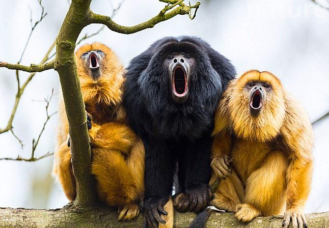
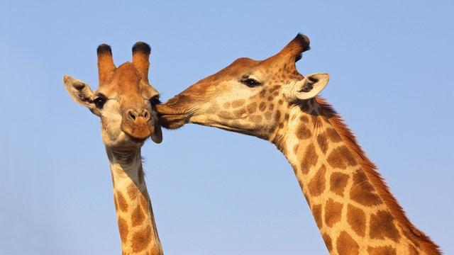

Welcome to the Wild Side! ;)
Zookeepers, let's embrace the wonders of the animal kingdom, learning from each species and fostering connections that inspire both awe and appreciation.
Bears
- Ollie
- Mona
Home was once the wild, now it's the Zoo for our Black Bears Ollie and Mona. These two were found scavanging for food around human-occupied areas, so the siblings were moved here in 20XX. Their favorite meals are seafood, fruit, and honey. On a Summer day you'll find them sun-bathing, as well as exhausting playful energy. We can't say the same during the Winter, but swing around the caves to watch them hirbernate!
Lions
- Mella
- Karl
Meet Karl and Mella, the dynamic duo ruling over their domain at the lion enclosure. Karl, has a majestic golden mane cascading down his powerful shoulders, eyes seem to hold centuries of wisdom, while his stature commands respect from all who behold him. In contrast, Mella is the epitome of playful charm. With her endearing antics and mischievous grin, Mella has a knack for captivating the hearts of visitors young and old alike.
Alligators
- Wren
- Aspen
- Mika
Welcome to the swamp habitat, home to the prehistoric dinosaurs Wren, Aspen, and Mika. These alligators reside in the heart of the zoo's reptile exhibit. Starting off with Wren, the largest and the oldest of the trio -- be careful, this old guy has a bad temper and always gets first dibs on meals, or else. Aspen is a master of disguise and never stays in one place, good luck finding her in the swamp. Our youngest Mika exudes infectious youth to those who encounter her.
Monkeys
- Cookie
- Earl
- Banana Pudding
Welcome to the liveliest and loudest part of the exhibit, also known as home to our howler primates Earl, Cookie, and Banana Pudding. Together these three form a tight-knit family unit, bound by a shared sense of camaraderie and adventure. As they swing through the branches of their habitat, howling excitedly amongst themselves, they serve as a reminder of how beautiful and complex the natural world is.
Giraffes
- Frankie
- Coconut
Frankie, also known as Frank, is a 5 year-old male giraffe. This young bull wasn't born in the Zoo, a local santuary donated him to us. Normally, newcomers need some time to get used to their new roommates, but that's not the case in this story. This young bull became well acquainted with our other giraffe, Coconut. It's almost as if he fell head over hooves the moment he saw her and we she feels the same way. These two were destined for each other. Coconut, also known as Coco, is a 4 year-old female giraffe. She was the first giraffe born at the Zoo, woo-hoo! Love should have been her first name because her birthday is February 14th. Her favorite times of the day are meal time, naptime, and Frankie time.